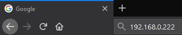

Copiar juegos de Wii/GameCube
Si tienes problemas para seguir los pasos de esta guía, por favor solicita ayuda en nuestro servidor de Discord (recomendado), o envíanos un correo electrónico. Soporte disponible solo en inglés.
¿Quieres extraer un disco de GameCube o de Wii? Hay dos formas de hacerlo, dependiendo de las herramientas que tengas contigo.
Guía de Cleanrip
Requisitos
- Una tarjeta SD o unidad USB con al menos 4,7 GB de espacio libre (8,5 GB si se copia un disco de doble capa).
- CleanRip
Instrucciones
Sección I - Descarga/instalación
- Extrae CleanRip a la carpeta
appsen tu tarjeta SD o unidad USB. - Inserta la tarjeta SD o unidad USB en tu Wii e inicia CleanRip desde el Canal Homebrew.
Sección II - Copiando un juego
- Elige el dispositivo de almacenamiento donde deseas copiar el juego, ya sea tu unidad USB o tarjeta SD.

- En esta pantalla se te preguntará si quieres descargar una base de datos con sumas de verificación, para que de esta forma puedas verificar que la copia recién creada sea idéntica al contenido del disco. Tú decides si deseas descargar el archivo o no.

- Ahora inserta el disco que quieres copiar (si aún no lo habías insertado).


- Configúralo como en la foto de abajo.
title: “CleanRip”

- CleanRip empezará a copiar tu juego. Este proceso puede tardar un rato, ya que se van a copiar todos los contenidos del disco (4.7 GB para discos normales, 9.4 GB para discos de doble capa y 1.5 GB para juegos de GameCube).

Volcado de un juego en una red local
title: “Volcar juegos de Wii/GameCube a través de la red local” —
Requisitos
- Un Wii.
- Herramienta volcado de DVD
Tu Wii y tu ordenador deben estar conectados a la misma red local
Instrucciones
Sección I - Descarga/instalación
- Extrae DVD Dump Tool a la carpeta
appsen tu tarjeta SD o unidad USB. - Inserta la tarjeta SD o unidad USB en tu Wii e inicia DVD Dump Tool desde el Canal Homebrew.
Sección II - Copiando un juego
- Presiona el botón derecho en la cruz de control y después oprime A.

- Elige el tipo de disco que quieres copiar, ya sea un disco normal, de doble capa o de GameCube, y después oprime A.

- Ahora inserta el disco que quieres copiar en tu Wii. (Si ya está en tu Wii, expulsar el juego y insertarlo)


- Toma nota de la IP de tu Wii

- Abre el navegador en tu computadora, escribe la IP de tu Wii en la barra de dirección y presiona ENTER. 
- Debería de cargarse esta página. Ahora sólo haz clic en
Click here to download XXXX.isopara comenzar la transferencia
- La velocidad de transferencia no es la más rápida, pero es mejor que no tener nada si no puedes copiar tus juegos usando CleanRip.